Nezha 操作手册
覆盖六大功能线：云效议题闭环、知识沉淀、技能管理、构建、知识图谱、计划与合并审核。
0环境与前置条件
| 条件 | 说明 |
|---|---|
| 已安装 Claude Code / Codex | Nezha 通过它们执行 Agent 会话，需能在终端正常调用 |
| 云效 Projex 个人访问令牌 | 格式 pt-xxxx，用于读议题、发评论、创建议题与合并请求；只存于 ~/.nezha/settings.json |
| 目标仓库已注册为 Nezha 项目 | 欢迎页 →「打开项目」，选定仓库根目录即可 |
| 技能仓库已配置 | 构建、知识图谱、补录议题等能力都依赖技能仓库，先按第 5 节配置来源 |
1云效议题闭环
云效议题闭环覆盖完整生命周期：云效看议题 → 选路（直接开始 / 发起讨论）→ 方案讨论或直接执行 → 生成待办拆解 → 提交关联编号 → 回写云效 →（必要时）补录新议题。核心入口是欢迎页左侧边栏的「云效议题」（云朵图标）。
1.1连接云效
- 填入云效个人访问令牌（
pt-xxxx）。 - 点「获取组织」，拉取当前令牌可见的组织列表；若该令牌只对应一个组织，会自动选中并加载项目。
- 选择组织 → 点「加载项目」选择项目。
- 可选：填入「我的用户 ID / 我的用户名」（留空则自动探测），用于「只看我负责的」过滤。
- 点「保存连接」。成功后视图顶部显示「
组织名 · 项目名」。
后续如需切换账号或项目：顶部「重新连接」进连接表单；「刷新」重新拉取当前项目议题。
连接信息保存在应用级设置（~/.nezha/settings.json），每个项目打开时可直接复用。该令牌同时被「合并审核」「计划」等云效功能复用。
1.2浏览与筛选议题

- 类别 Tab：全部 / 需求 / 任务 / 缺陷。
- 项目切换：顶部下拉可直接切换云效项目，无需重新进设置。
- 状态过滤：多选状态；「只看我负责的」开关（需已正确识别当前用户，否则会提示到连接设置里补填）。
- 搜索框：按标题或编号模糊搜索（本地过滤）。
- 分页：每页 100 条，底部「加载更多」，顶部显示
{count} 条议题。
1.3把议题变成任务：两个入口
议题列表每一行右侧有文字按钮（未勾选任何议题时可见），都是一次点击直达、没有二级菜单 / 「…」折叠：
- 「直接开始」（accent 文字色）——跳过讨论，直接执行该议题。行内主操作，常驻显示。
- 「发起讨论」「加到计划」（灰色次级）——进入方案讨论链路（N=1 的单条快捷入口）／把该议题加进某个交付计划。这两个次级动作平时收起，鼠标悬停该行（或键盘聚焦行内按钮）时才现身，行内静止态因此不会被一排按钮占满。
议题列表上方的「导入到项目」下拉用于选择这两个入口的目标本地项目（会记住上次选择）。
完整对照（含工作流路由与逐条决策指南）见 云效议题完整闭环说明（HTML） · Markdown。
1.4发起讨论：先出方案，再执行

点「发起讨论」，在确认框里选择 Agent（Claude / Codex / DSH）与权限模式（询问 / 自动编辑 / YOLO）、填写「讨论补充」，确认后：
- 打开对话框即已创建 draft 方案（Plan），议题详情与图片归档到
.nezha/plans/<planId>/； - 待办（或新建任务）转化为方案讨论任务并立即启动；按议题类别走
grilling决策树（Bug 议题先用diagnosing-bugs定位根因）； - 讨论阶段先不写代码，产出两份文件：方案文档
plan.md，以及机器可读的依赖清单deps.json。
若本项目已有其它已定稿方案，确认框里会多出「关联方案（作为子方案追加）」下拉：选一个主方案，这批议题就挂成它的子方案；不选则是独立方案。
方案定稿后，从任务头部「方案」按钮打开预览，右上角两个按钮：

- 「开始」——生成待办并立即按
deps.json的拓扑顺序串行跑起来（不弹确认页，沿用方案顺序与上次的 Agent / 权限）； - 「生成待办」——只生成
todo任务、不启动，由人工把关后再跑。

1.5方案看板与依赖门禁
方案看板回答「这个项目有哪些方案、各自到哪一步了」：Alt + K（Windows）/ ⌘ + K（macOS）打开看板浮层 → 切「方案」标签页（与任务看板共用浮层，不新增入口）。左栏按方案列出（含完成进度与状态筛选，支持「仅看进行中」），右栏是当前方案的依赖关系图（左 → 右 = 执行顺序）与按拓扑顺序排列的任务行。

方案生命周期操作在看板右上角：
| 操作 | 语义 |
|---|---|
| 标记完成 | 由你决定方案算不算完成（可能还有验收或后续工作）。仅「执行中」的方案可标记。 |
| 重新打开 | 已完成方案的逆操作，回到执行态继续干活。 |
| 取消方案 | 取消是留存状态，记录仍在看板上，不会被删掉。 |
| 归档 / 反归档 | 把已完成方案移出主列，收进底部「已归档（N）」区；展示层标记，与状态正交。 |
| 删除 | 显式删除、二次确认；仍有任务引用该方案时后端会拒绝。 |
依赖门禁（deps.json）：讨论产出的 deps.json 声明议题间的先后关系，Nezha 解析它并做拓扑排序。
- 前置未全部
done的待办停在waiting_deps（等待前置），完成后自动放行；等待中不创建 PTY。 - 前置失败 / 取消 / 中断 / 缺失时不静默跳过：任务继续等待、在看板标红、只通知一次，由你决定是否「忽略依赖，仍然开始」。
- 放行还受每项目并发上限
[plan] max_concurrent约束（默认 1 = 串行）。「忽略依赖」只绕过前置判断，不绕过并发上限；手动点 ▶ 也受同一串行闸门约束。 - 解析刻意宽松：文件损坏只是少一道护栏（告警降级），依赖成环时环上的边全部丢弃，门禁不会死锁。


1.6追加议题：挂成子方案
方案定稿并执行后，若又来了一批相关议题想接着挂到同一个主方案下，用「追加议题」——一次追加的一批议题合成一个子方案，挂在主方案下，有自己的 plan.md 与 deps.json。
入口就在「发起讨论」对话框里（见 1.4），不另设议题选择器：那个视图本来就有多选、筛选、分页与「已占用议题」置灰，追加只是在那里多一个可选字段。

- 选一个已定稿的主方案 → 这批议题成为它的子方案；保持「不关联（独立方案）」→ 与以前一样是独立方案；
- 讨论会话会拿到主方案的议题清单与方案文档路径，由 Agent 按内容判定跨方案依赖；
- 看板上子方案缩进在父方案之下，且不独立筛选（筛选按子树语义，命中子方案会连带整条祖先链显示）；跨方案前置在依赖图里渲染为外部节点。
1.7直接开始：议题即 spec

点「直接开始」先在确认框里预览议题详情、填写「补充说明（可选）」并选择 Agent / 权限，再点「直接开始」才真正建任务。按议题类别路由：
| 议题类别 | 勾选状态 | 实际工作流 |
|---|---|---|
| 缺陷（Bug） | 复选框不出现 | 先 diagnosing-bugs 定位根因（要有可复现证据）→ 再 implement |
| 需求 / 任务 | 不勾（默认） | 直接 implement，议题描述即 spec |
| 需求 / 任务 | 勾选「先做需求澄清」 | 先 grilling 一次一问澄清需求 → 达成共识后立即 implement |
直接执行不生成 plan.md，同样要求提交信息带 #议题编号、同样支持完成后的「回写云效」。
1.8补录议题（反向闭环）
如果讨论 / 执行中途发现了需要立项的新问题，可以反向补录成正式议题（不打断当前会话）：
- 在任务运行中，手动调用
yunxiao-backfill-issue技能（该技能位于技能仓库，需已安装到项目）。 - Agent 先问「缺陷还是需求」，再按对应模板逐项盘问（缺陷描述/发生频率/影响范围/业务影响；或需求背景/详细描述/使用频率/紧急程度），并对基础字段做判断（负责人=令牌当前用户，优先级=按价值评分推导，严重程度=Agent 判断，来源默认「内部反馈」，归属项目=当前议题项目）。
- 汇总成最终议题预览，用户确认（可修改），确认即人工闸。
- Agent 按模板结构写出
.nezha/drafts/<taskId>/backfill-issue.json；Nezha 轮询侦测到后，由持有令牌的后端调用CreateWorkitem创建云效新议题 Y。 - 新议题 Y 生成后，Nezha 自动创建一个绑定该议题的本地待办任务（
status=todo，记录来源任务/来源议题），并在云效描述中写清来源行，便于追溯。
1.9方案回写云效（正向闭环收口）
任务完成后（done 且云效绑定任务）：
- 任务详情头部出现「回写云效」按钮；任务列表卡片显示「待回写」徽标。
- 点按钮 → 生成两条评论预览：开发向评论（改动内容与「价值评分」由来，素材来自任务的方案文档 / 讨论产物）与测试向评论（影响范围与测试指引）；事实骨架含议题编号/标题、关联 commit 短哈希 + 提交信息、变更统计，再由 headless Agent 润色，AI 失败时回退为纯事实模板。
- 预览可编辑，也可「重新生成」。
- 确认后点「发布评论」：Nezha 调用云效接口把两条评论追加到议题；「价值评分」小节同时写入云效字段（字段写失败时可「补写字段」）。
- 成功后按钮置「已回写」。任务记录
yunxiaoWrittenBackAt/yunxiaoCommentId，保证幂等，不重复回写。
1.10议题闭环全景
- 议题即 spec，零方案占位
- 打开即建 draft 方案（占位）
- 讨论产出
plan.md+deps.json - 方案定稿 →「开始」或「生成待办」拆出执行任务
- 依赖门禁按拓扑放行（默认串行）
- 任务 done
- 回写云效（评论 + 价值评分）
- 提交带
#议题编号自动关联 - 议题闭环收口
- 补录议题立项
- Nezha 用令牌建云效议题 + 绑定新待办
- 回到「待办」列，人工把关
1.11直接开始 vs 发起讨论（怎么选）
| 你的处境 | 选择 |
|---|---|
| 需求不清楚、影响面大、需要方案留痕 / 人工把关、或要跨多个议题统筹 | 发起讨论 |
| 缺陷根因明确要直接修、一句话说得清的小改动 | 直接开始（不勾澄清） |
| 方向清楚，但验收标准 / 边界细节想和 Agent 对齐一下 | 直接开始 + 勾「先做需求澄清」 |
| 手里这条议题要拆成多个执行任务 | 发起讨论 → 生成待办（或直接「开始」串行跑） |
2知识沉淀闭环
知识沉淀解决「Agent 讨论中确认的知识随会话流失」的问题：把讨论里确认的、且有依据的增量知识，提取出来并格式化成云效审核议题，交给知识库负责人审核后更新图谱数据。
yunxiaoWorkitemId 且非方案讨论任务），
状态 done，且项目已绑定知识图谱、「知识沉淀」总开关开启。契约正文的唯一事实源是 SkillHub 的
knowledge-graph/references/sedimentation.md：任务提示词只注入技能指针（并把它放进环境变量
$NEZHA_KNOWLEDGE_SEDIMENTATION_CONTRACT），agent 收尾时按契约写
.nezha/drafts/<taskId>/knowledge.json，随后由 Nezha 侧四层门复核并写入图谱。
普通任务与方案讨论任务不要求产出，也不做检查。
2.1入口
任务为 done 且云效绑定时，任务详情头部在「回写云效」旁出现「沉淀知识」按钮（未处理时）；任务卡片可识别处理情况。若任务已记录 knowledgeIssueIds，按钮置「已沉淀」。
2.2生成候选知识
- 后端读取
knowledge-sedimentation技能内容，注入 headless prompt。 - 输入包括：会话摘要（约 8000 字截断）、云效议题补充字段与链接、知识图谱 data 目录（现场比对）、项目根代码（用于
rg验证依据）。 - 按「卡片六段骨架」判定优先级：业务规则/已知坑 > 关键实体/表映射 > 职责修正/依赖补充 > 验证记录；门槛 = 有依据（代码/文档/用户确认）；排除图谱已有内容、无依据猜测、纯实现细节。
- 输出标签化 JSON，每条含：
模块 / 段落 / 内容 / 依据 / 置信度（已确认|待验证）/ 建议标题。
2.3预览与编辑
弹窗「知识沉淀 · 创建审核议题」列出候选知识：
- 每条可编辑内容、依据、标题、置信度。
- 可勾选要创建的候选（未勾选的跳过）。
- 无有效候选时提示「未识别到有价值且图谱中没有的知识」；可「重新生成」重新提取。
2.4创建审核议题
勾选后点「创建所选（N）」：
- 后端调用云效接口，逐条创建到「知识库图谱」项目（
Req；项目 ID 见YunxiaoSettings.knowledgeBaseProjectId，默认bc826ccda665f0718511440fac）。 - 议题标题格式：
【知识沉淀】<模块id>-<知识点摘要>。 - 议题描述固定模板：来源议题（编号 + 链接）→ 目标模块卡片 → 建议更新段落 → 具体内容 → 依据 → 置信度 → 审核指引。
- 去重：创建前按标题关键词搜索该项目已有议题，命中则跳过，不重复创建。
- 成功后任务记录
knowledgeIssueIds，按钮置「已沉淀」；弹窗汇总「已创建 x/y，其余为重复」。
2.5自动回写（可选）与人工审核
在「应用设置 → 技能库」中有一个开关「知识沉淀自动回写」（提交后经质量门自动写入技能库）：
- 关闭（默认）：知识只到「创建审核议题」这一步，不入库图谱
data/。审核通过后由知识库负责人人工更新模块卡片并提交推送（图谱数据由 git 统一管理）。 - 开启：创建审核议题后，Nezha 立即对「已确认」且有依据的条目跑一次回写质量门；全部通过时把知识追加写入项目设置中选定的知识图谱模块卡片、推送技能库，并把该议题置为「已完成」。未通过的条目保留人工审核。
3技能管理
Nezha 用技能仓库统一管理技能：一个来源（本地目录或 git 远端），通过软链安装到各项目/全局；技能内容随仓库版本走，更新后已安装项零成本跟随。
3.1入口
- 技能库视图：欢迎页左侧「技能库」（积木图标）→
SkillHubView。 - 来源配置：欢迎页右下角齿轮 → 应用设置 →「技能」→
SkillsPanel。
3.2配置技能来源
本地目录：选一个含技能子目录（每个子目录有 SKILL.md）的文件夹。确定后 Nezha 把它注册为一个特殊项目，可在任务视图内编辑技能。
git 远端：
- 填仓库 URL（仅允许
https://或git@，拒绝其它协议与本地路径伪装）+ 可选分支（缺省跟随远端默认分支）。 - 点「保存并同步」：首次自动完整
git clone（不用浅克隆，以便图谱可git revert回滚）到~/.nezha/skill_repos/<sanitized-repo-name>/；已存在则git fetch探测变更，有变更才--ff-only拉取（不reset，不覆盖本地改动）。启动后每 15 分钟后台自动拉取一次，让知识图谱尽量保持最新；失败静默沿用缓存并退避。 - 面板下方展示解析后的技能库路径、上次同步时间、当前 commit，及同步失败标记。
stale（过期）并记录错误，UI 可手动重试。
3.3同步与状态
- 头部显示：来源类型、来源地址、上次同步时间、当前 commit（前 12 位）、同步失败标记。
- 「立即同步」按钮：手动触发一次同步。
- 自动探测：启动时异步一次 + 窗口聚焦 + 每 30–60 分钟周期探测；本地路径来源用文件变更监听（
notify）实时重扫。 - 「在任务视图中打开」：进入技能库项目，用代码/文件视图直接编辑技能。
3.4安装技能到项目
- 点「管理」→ 弹窗「安装到项目」。
- 选择目标项目与 Agent（Claude / Codex），或选择「全局」（装到
~/.claude/skills、~/.codex/skills，所有项目可用）。 - 确认安装 —— 该技能在你的项目中以软链存在，指向 Hub 内的技能目录，因此 Hub 更新后已安装技能自动跟随，无需重装。
健康检查标记：ok（正常） / broken（软链目标丢失） / diverged（路径在 Nezha 之外被修改）。
3.5技能数据管理
若技能安装到项目且技能目录含声明数据目录（如 his-knowledge-graph/data/）：
- 在「管理」弹窗的数据区可：打开数据文件夹、备份到指定路径、重新构建（用于技能派生数据生成）。
- 数据目录由
NEZHA_SKILL_DATA_DIR等环境变量注入，随技能仓库 git 统一管理。
3.6失效安装与删除
- 清理失效安装：「技能库」工具栏「清理全部失效安装」——只删除指向失效目标的软链与安装记录，不删除任何普通目录。
- 删除技能：每条技能右侧垃圾桶 → 默认会删除技能目录 + 所有安装软链（有二次确认）。
- 技能被改名/删除后，已安装项目健康标记会变为
broken/diverged，由用户手动卸载，Nezha 不做自动删除。
3.7SkillHub 任务视图
技能库作为特殊项目注册进 projects.json，你可以在普通任务/文件/终端视图里打开它，像编辑普通项目一样编辑技能内容。
3.8应用级技能开关
「应用设置 → 技能库」下有两个影响 Agent 行为的应用级开关：
| 开关 | 作用 |
|---|---|
| 知识沉淀自动回写 | 见 2.5 节：创建审核议题后自动跑质量门并写入绑定图谱 |
| 批量盘问（带「测试」徽标，实验性） | 需求澄清 / 方案讨论从「一次一问」改为「一轮抛出当前前沿的全部问题（各附推荐答案）」，压往返次数。只改提示词风格；需先安装 batch-grill-me 技能；Bug 议题仍走一次一问的根因取证。 |

4构建
面向 HIS 这类 .NET Framework 大解决方案的一键多仓库拉取 + 依赖拓扑编译面板，负责「拉代码 → 排依赖 → 编译 → 收集报错 → 派发修复任务」。
4.1入口与前置
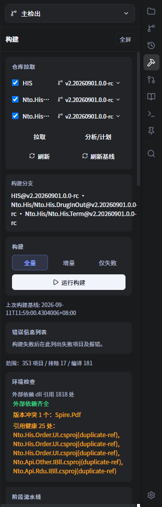
- 进入项目后，点右侧工具栏的锤子图标（悬停提示「构建」），右侧展开「构建」面板；面板右上角「全屏」可进入专注监视器。
- 前置：目标项目为 git 仓库；已安装
hsp-build-order技能（提供hsp-build-order.ps1）；机器具备 VS18MSBuild.exe、NuGet 缓存与共享输出目录（含外部 dll）。 - 若面板显示「未发现 git 仓库」，点「刷新」重新探测。
4.2仓库拉取
- 「仓库拉取」列出自动推导的仓库：主仓库 +
.gitmodules子模块。子模块默认只展示 DrugInOut / Term / Hsp.Win，可在项目设置 → 构建 → 可选子仓库的多选下拉里勾选要展示的子仓库（不勾选任何一项表示列出全部子模块）。同一份列表也是任务面板顶部仓库切换器的子仓库来源：切到某个子仓库后，右侧「Git 变更」「Git 历史」面板展示的就是该子仓库的记录。 - 每个仓库可独立切换分支（下拉），并显示当前分支 /
脏（有未提交改动）/缺失状态。 - 勾选要拉取的仓库 → 点「拉取」：走
git pull --ff-only --no-rebase；脏仓库会被阻断（绝不 stash / reset）；远端引用陈旧导致失败时自动git fetch --prune --force origin后重试；结果显示为压缩摘要。 - 「刷新基线」把当前各仓库 HEAD 写入
.nezha/build-state.json，作为增量构建的比较基准（不编译）。 - 「清理失效分支」删除远端已不存在的本地分支（只对勾选的仓库生效）：先
git fetch --prune origin刷新远端引用，再扫描候选 → 弹确认框 → 确认后才删除。- 只删提交已存在于某个
origin/*分支的本地分支；有未提交内容 / 未合入远端的提交一律跳过（只列原因，不删）。 - 当前检出分支、被 worktree 占用的分支、
main/master/develop与default_branch永不参与清理。 - 结果按分支列出
✓ 已删除 / × 删除失败 / · 跳过与原因。
- 只删提交已存在于某个
4.3分析 / 计划
点「分析/计划」：以 -DryRun 生成阶段流水线、依赖图、循环组、外部 dll 引用清单、引用健康（重复引用 / TFM 低于被引用项目）与环境检查（NuGet 还原 / VS18-RID 兼容 / 外部 dll 缺失），写入 Log/build-plan.json。不编译。
「环境检查」卡片会显示：外部依赖 dll 引用数、缺失项、版本冲突、引用健康问题；「阶段流水线」按阶段列出各工程状态。
4.4运行构建
- 构建模式：
全量/增量/仅失败。 - 增量范围：默认只编 git 变更文件直接命中的工程（对比
.nezha/build-state.json的基线 commit，覆盖已提交、已暂存、未暂存改动与未跟踪新文件）。因为本解决方案的工程之间是 HintPath 引用共享目录 dll（不是ProjectReference），改动不会自动传播到依赖方，所以默认不扩散反向依赖闭包——否则实测 4 个变更工程会被放大成 100+ 个。- 若改了公共 API / 基类，需要把依赖方一起编，勾选「附带反向依赖方」即可恢复闭包语义。
- 增量与仅失败模式跳过坏状态清理（不搬移
obj），保证增量编译复用中间产物；需要清理obj时用「全量」。
- 点「运行构建」：子进程跑
hsp-build-order.ps1，按依赖拓扑（就绪波）编译；MaxParallel控制并发（默认 2，1=串行）。运行中显示进度N/总数 · xx% · 阶段、进度条与用时；「取消」整树终止（含 MSBuild / dotnet）。 - 成功自动刷新构建基线；失败保留在全屏监视器里便于排查。
4.5错误清单与修复
- 构建失败后生成「错误信息列表」：每个失败项目 +
error行 +依赖失败: ...（链式）/[工具链] ...诊断。 - 每项一个 checkbox：勾选 = 标记已修复，持久化到
.nezha/build-fix-status.json。 - 「发起修复任务」：新建 agent 任务（当前工作区、YOLO 全权限），prompt 指引 agent 先读取
Log/build-errors.txt→ 总结错误类别 → 逐个修复并重编验证 → 把修好的项目名写入.nezha/build-fix-status.json的fixed数组，最后刷新构建基线。 - 「导出错误信息」：把错误列表写入
Log/build-errors.txt。 - 修复后重跑：切到「仅失败」模式，只编未勾选的失败项 + 依赖方，快速验证；通过后再「全量」。
4.6构建配置
| 字段 | 说明 |
|---|---|
script_path | hsp-build-order.ps1 路径（留空自动探测，通常走 SkillHub 托管副本） |
msbuild_path | VS18 MSBuild.exe（留空自动探测） |
max_parallel | 并行度（1=串行，2–8 并行） |
auto_fix_on_failure | 构建失败时自动发起修复任务（默认 false；同一批失败工程只自动发起一次） |
solution / configuration / platform / external_dll_dir / skip_* | 对应 ps1 参数，一般无需手改 |
.nezha/build-state.json（增量基线）、.nezha/build-fix-status.json（修复标记）、Log/build-plan.json、Log/build-errors.txt。
该面板面向 Windows + PowerShell + MSBuild 场景；更细的脚本说明见 构建工具详解。
5知识图谱
知识图谱是 Agent 的「项目认知底座」：把模块职责、关键实体、数据表、业务规则、已知坑等固化成模块卡片，供讨论/执行时查阅，也让沉淀的知识有处可落。分两个操作面。
5.1入口
- 浏览 / 编辑：项目右侧工具栏「知识库」（书本图标）——浏览并编辑当前项目绑定图谱的模块卡片。
- 绑定 / 初始化 / 扫描：项目「设置」→ 左侧「知识库」。
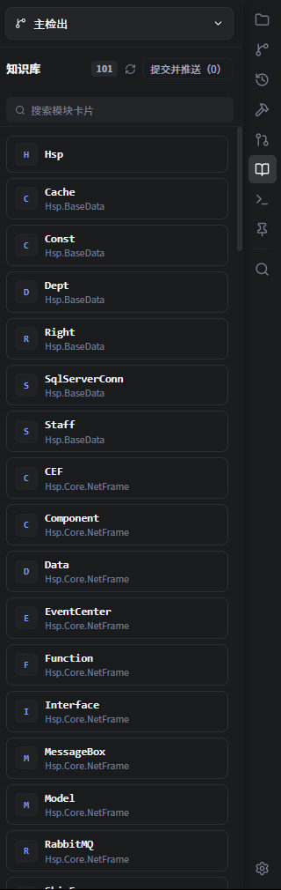
5.2面板：浏览、编辑与推送
- 顶部显示卡片数量与「提交并推送（N）」；有未提交改动时卡片带「已改」标记。
- 「搜索模块卡片」按模块名过滤。
- 点某张卡片会在主窗口以 Markdown 页签打开，可直接编辑（自动保存），也可提交推送。
- 未绑定图谱时提示「当前项目未绑定知识库，请到项目设置中配置。」
5.3设置：图谱绑定与维护
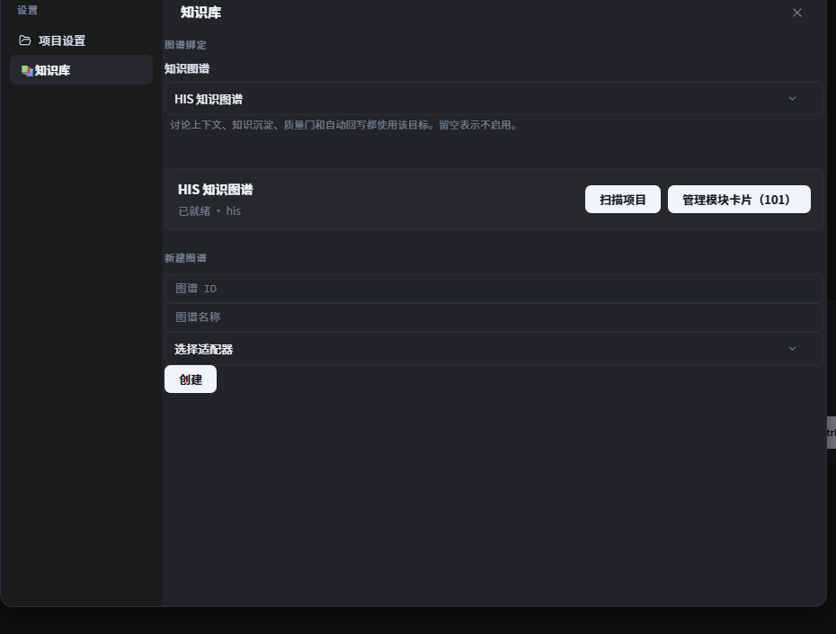
- 图谱绑定：下拉选择要绑定的知识图谱（或「未配置」表示不启用）。提示语说明「讨论上下文、知识沉淀、质量门和自动回写都使用该目标」。
- 已绑定图谱显示状态（如「已就绪 · <适配器>」），并提供「扫描项目」（跑
bootstrap.py --mode scan依据项目代码重建index.md/graph.json，已有模块卡片不会被覆盖）与「管理模块卡片（N）」（新建 / 编辑 / 重命名 / 删除卡片，并提交推送）。 - 新建图谱：填「图谱 ID」「图谱名称」、选「选择适配器」，点「创建」新建一张图谱并绑定到当前项目。
5.4数据与约束
- 图谱数据由技能仓库统一管理：
knowledge-graphs/<图谱ID>/graph.toml（清单：id/name/adapter）与knowledge-graphs/<图谱ID>/data/modules/*.md（模块卡片）；脚本在knowledge-graph/（bootstrap.py与adapters/<adapter>.py）。 - 项目绑定写在
.nezha/config.toml的[knowledge] graph_id；留空 = 不启用。 - 「已就绪」需同时具备
data/modules与knowledge-graph/脚本目录；「扫描项目」还需存在对应适配器。 - 需先配置技能仓库（第 3 节），否则提示「技能库未配置，无法选择知识库」。
- 与「知识沉淀」（第 2 节）的关系：沉淀从会话提取候选并创建云效审核议题；本面板负责查看 / 编辑 / 推送图谱数据本身。开启「知识沉淀自动回写」后，确认过的知识也会自动落到这里的卡片。
6计划与合并请求
把一组云效议题组织成一个计划（一组有序议题 + 一条分支 + 可选一个 worktree），收尾推送成一个云效 Codeup 合并请求（MR）。认证复用「云效议题」里配置的令牌与组织（第 1.1 节），无需单独配置。
创建 MR 有两条路径：计划链路（6.2–6.3，先有计划）与「发起合并」视图（6.4，直接为无计划记录的分支发起，并顺带清理已收尾的远端分支）。
6.1计划视图
欢迎页左侧栏「计划」（与云效议题同级）进入计划模块。视图分两栏：左列是计划列表（顶部「创建计划」按钮 + 项目 / 状态两个过滤器），右列是选中计划的详情。
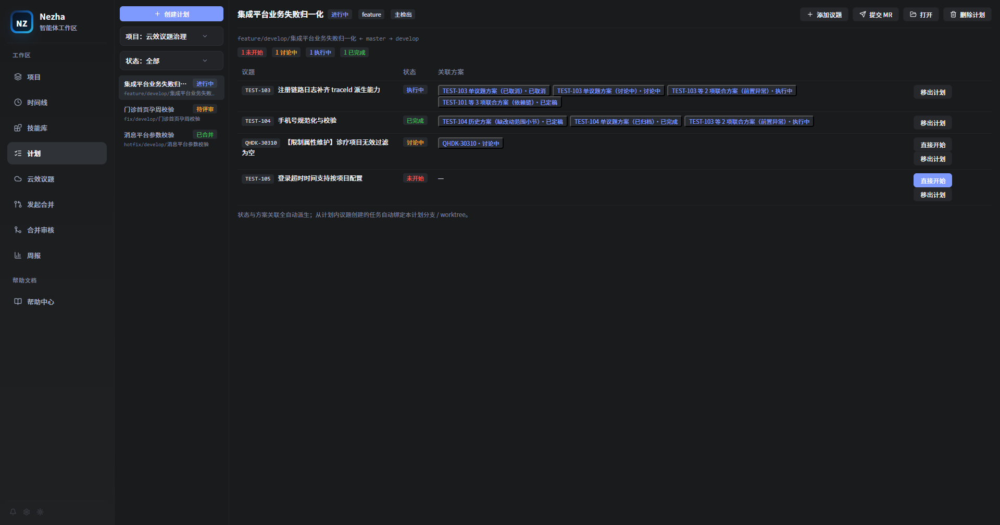
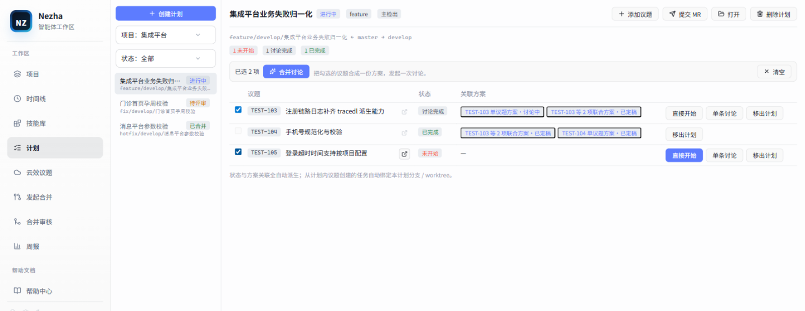
左列：过滤与列表
- 顶部「创建计划」按钮置顶，点击打开 6.2 的创建对话框。
- 项目过滤下拉切换当前展示哪个项目的计划；状态过滤提供
全部 / 进行中 / 待评审 / 已合并 / 已关闭五档。 - 每个列表项显示计划名、状态徽标与分支名；无匹配时显示「无匹配计划」。
右列：计划详情
- 状态徽标全自动流转：
进行中（创建即此）→待评审（提交 MR 后）→已合并（MR 合并后）；删除 / 关闭落已关闭。 - 按实际情况附带徽标：主检出（未建 worktree 的计划）、WorkTree 缺失、运行程序缺失、超期（创建超过 14 天且未合并 / 未关闭）。
- 动作行：「添加议题」（跳云效议题视图补员）、「提交 MR」（见 6.3；计划非进行中、未指定目标分支或 WorkTree 缺失时禁用）、「打开」（在文件管理器中打开计划的代码目录）、「删除计划」。
- 分支行：
源分支 ← 基础分支 → 目标分支，未指定合并目标时显示「（未指定合并目标）」。
议题表与派生状态
详情顶部的状态汇总条先给出各状态计数；下方议题表逐行列出议题、状态、关联方案与行内动作。状态与方案关联全自动派生，无手动维护入口，判定自上而下取第一个命中：
| 状态 | 判定 |
|---|---|
| 已完成 | 任一执行任务 done |
| 执行中 | 任一执行任务处于非终态（pending / running / input_required / awaiting_review / waiting_deps / detached / interrupted；todo 不算执行） |
| 已结束 | 执行任务 failed / cancelled 且无在跑——行内给「重新发起」 |
| 讨论完成 | 关联方案已定稿 / 执行中 / 已完成，且无执行任务命中上面三条 |
| 讨论中 | 讨论任务非终态，或存在 draft 方案 |
| 未开始 | 无任务、无方案 |
- 关联方案：议题挂过的方案按创建时间倒序列成 chip，点击跳转方案看板；已取消方案展示但不计入「讨论完成」。
- 行内动作：与云效议题列表同口径，都是一次点击直达的文字按钮（没有二级菜单）。主操作常驻——未开始 / 讨论中 / 讨论完成 →「直接开始」，已结束 →「重新发起」；次级动作「单条讨论」「移出计划」平时收起，悬停该行（或键盘聚焦行内按钮）时才现身。主操作为 accent 文字色、次级为灰色，且主操作固定压在最右，悬停让次级现身时不会位移；「移出计划」是破坏性动作，只在鼠标悬到它自己时转红。
- 从计划内议题创建的任务自动绑定计划分支 / worktree，详情底部提示常驻。
- 删除计划有门禁：仍有未完成任务、嵌入式 Shell 占用、worktree 有未提交内容、MR 未合并、或提交 MR 后源分支新增提交，都会被拒绝并给出原因。
议题操作：单条讨论、合并讨论与云效链接
议题表的行内动作与云效议题列表同口径——可以直接从计划里发起讨论，不必先回云效议题视图挑一遍。
行内动作都是一次点击直达的文字按钮：主操作（「直接开始」/「重新发起」）常驻，次级动作（「单条讨论」「移出计划」）悬停该行时才现身，且主操作固定压在最右，悬停时不会位移。
静止态每行只有一个「直接开始」文字按钮（暗色）：
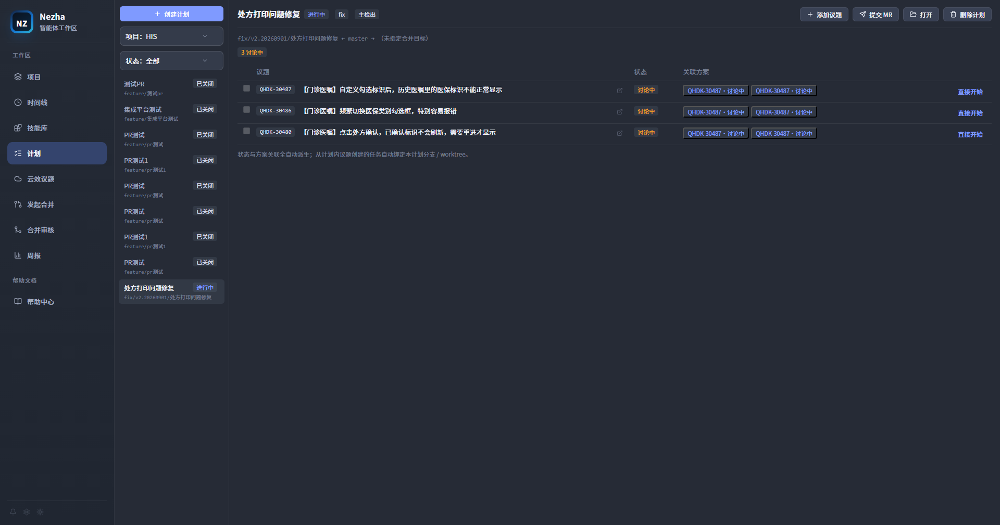
悬停该行后，次级动作「单条讨论」「移出计划」才现身（暗色 / 亮色）：
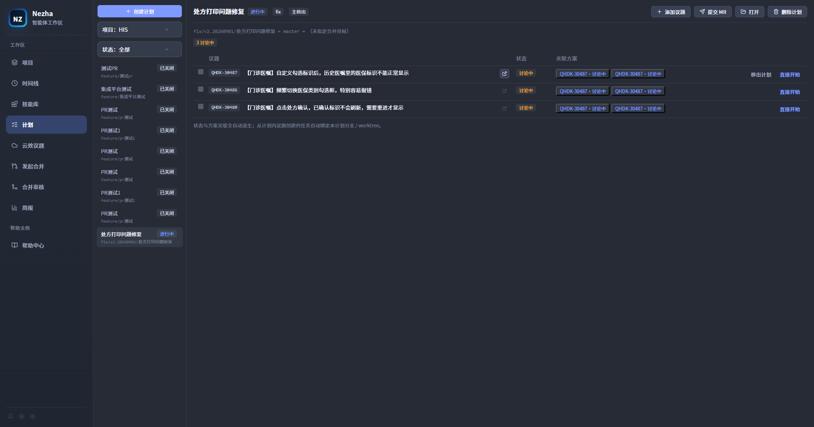
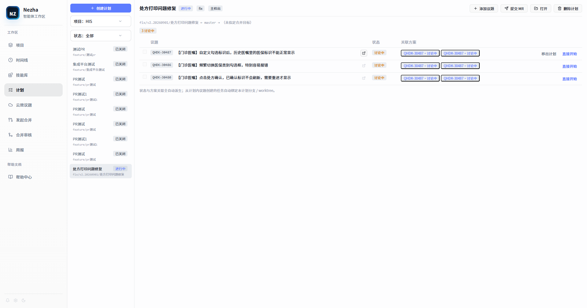
单条讨论：任意议题行内的「单条讨论」按钮，只针对这一条议题发起一次讨论（等价于云效议题列表的行内「发起讨论」，N=1），点开的是与多选发起同一个「发起讨论」对话框。
合并讨论：勾选多行议题左侧的复选框后，表格上方出现动作条，点「合并讨论」把这批议题合成一份方案发起一次讨论。勾选顺序＝方案里的议题顺序；单选软上限 10 条（讨论上下文与图片量的现实约束）。点「清空」取消全部勾选。
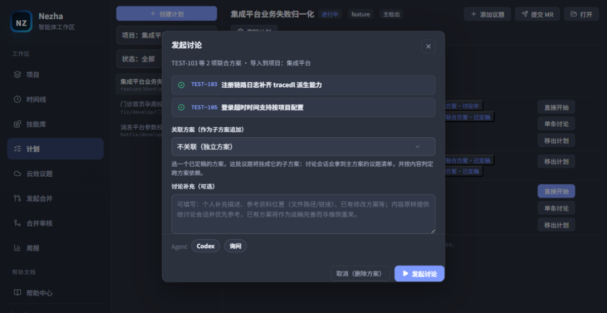
云效议题链接：每行议题标题右侧有一个「在云效打开」图标按钮，点击在浏览器打开该议题的云效 Projex 详情页。需要在项目「设置 → 云效议题」里配好令牌 / 组织 / 项目，链接才能拼出。
已占用的议题不能再发起讨论：议题一旦被任务绑定或被存活方案引用，它的勾选框会置灰、「单条讨论」按钮收起（悬停提示「已被任务或方案占用」）。这是与云效议题列表同源的重复发起守卫——同一议题重复讨论会多造一份方案。「直接开始 / 重新发起」不受影响，仍可用。
在计划里发起讨论，与在云效议题列表里发起讨论走的是同一条链路：都是落一份 draft 方案 → 并发拉取议题详情与图片 → 确认 agent / 权限后启动讨论任务。从计划内议题创建的任务会自动绑定本计划分支 / worktree。
6.2创建计划
计划视图左栏顶部的「创建计划」按钮或云效议题视图的「创建计划」按钮，都能打开「创建计划」对话框：
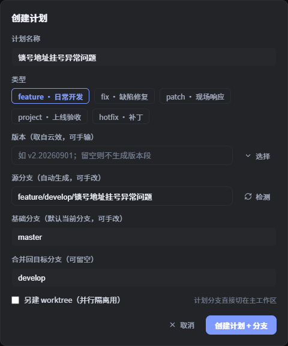
| 字段 | 说明 |
|---|---|
| 计划名称 | 如「锁号地址挂号异常问题」 |
| 类型 | feature · 日常开发 / fix · 缺陷修复 / patch · 现场响应 / project · 上线验收 / hotfix · 补丁 |
| 版本 | 分支名里的版本段，可取云效版本（如 v2.20260901，自动去掉云效版本名的尾部 .0），也可手输；留空则不生成版本段 |
| 源分支 | 按 类型/版本/目标分支/描述 自动生成、可手改（如 fix/v2.20260901/develop/锁号地址挂号异常问题）；点「检测」校验是否与远端 / 本地重名，冲突时可「继续使用远端分支」或「改名」 |
| 基础分支 | 从哪个分支切出；默认带出所选仓库的当前分支，可手改 |
| 合并回目标分支 | MR 的合并目标；填了该分支名会同时作为源分支名里的目标段（恒带出）。允许留空 = 暂不指定合并目标：源分支名不带目标段，计划照常创建，但不能提交 MR / 合并回 |
| 另建 worktree | 默认不勾选——计划分支直接切在主工作区，任务与提交都落在该分支上；需要并行隔离时才勾选，并填「代码目录」 |
点「创建计划 + 分支」（未勾选 worktree）或「创建计划 + 分支 + worktree」完成创建。成员（云效议题）创建后补：在云效议题列表多选 →「添加到计划」，或行内「加到计划」；一个议题同时只属于一个计划。
不建 worktree 的计划显示「主检出」徽标。此时计划分支就是主工作区的当前分支，创建前请先处理主工作区里的未提交改动——有改动时切换分支会被 git 拒绝，Nezha 会给出提示。
6.3提交合并请求
计划详情里点「提交 MR」→「提交合并请求」对话框：
- 可加「审核人」（默认带上目标分支保护规则里的默认评审人，可用成员选择器搜索勾选，也可手输）；
- 确认后点「提交到 Codeup」——Nezha 先把计划分支推送到远端，再调用 Codeup 接口创建 MR，并把 MR 状态回写到该计划。
6.4发起合并：为已有分支发起 / 清理 MR
计划链路要求先有计划；但 agent 用 git checkout -b 自建、或你自己推送的分支没有计划记录，走不了 6.3（「发起合并」候选列表会排除已被计划认领的分支）。这类分支走欢迎页左侧的「发起合并」视图——它把本地分支元数据与云效平台数据 join 起来，一次看清「哪些分支还没发起 MR、该合到哪、是否已可收尾」。
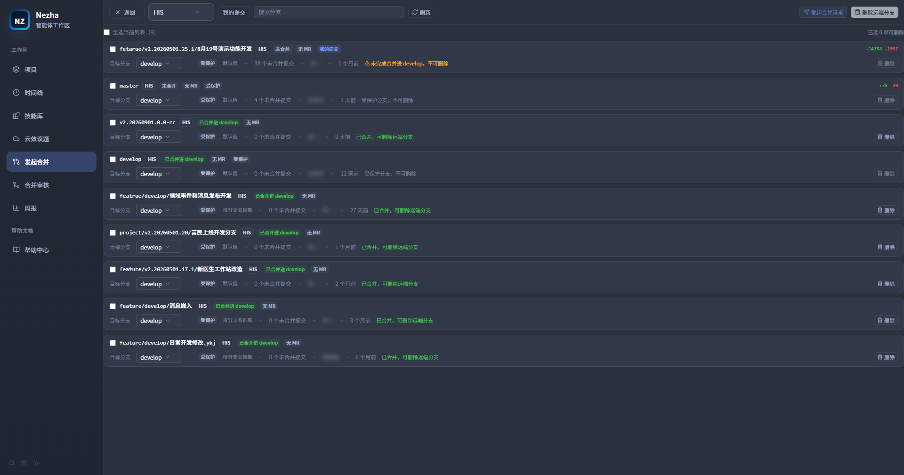
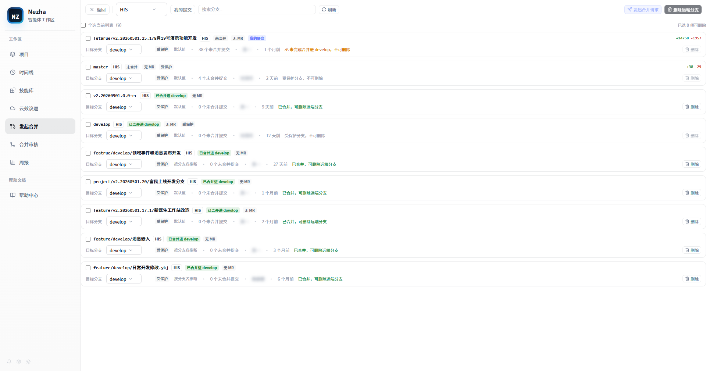
加载与筛选
视图分段加载，避免一进来就卡住：
- 打开后先做文件系统级仓库发现（无 git 子进程，秒回）；未选仓库时不会去扫码分支。
- 在工具条「仓库」下拉里选一个仓库，才扫那一个仓库的分支。
- 工具条其余控件：我的提交开关（默认开，只看含本人提交的分支）、搜索（按分支名）、刷新。
未选仓库时是提示态，不会自动全扫：
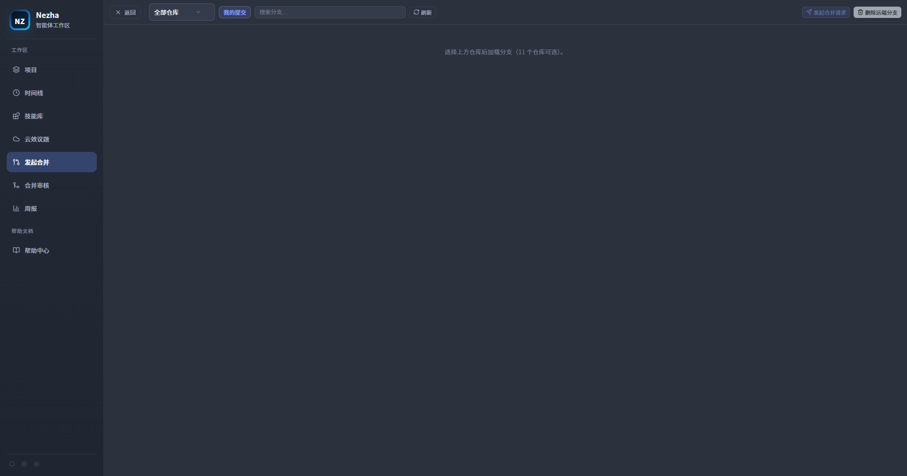
列表只出现「已推送 + 有未合并提交 + 无开放 MR」的候选分支，以及已完整合并、可清理的分支。
行信息与徽标
| 徽标 | 含义 |
|---|---|
| 已合并进 X / 部分合并 / 未合并 | 相对目标分支的合并状态；「部分合并」= 有提交进去了、还有没进去 |
| 无 MR / 已有 MR #N / MR 未知 | 平台上是否已有开放 MR；「MR 未知」表示平台数据没拉到（不据此过滤） |
| 我的提交 | 该分支的独有提交里有本人 commit |
| 受保护 | 平台 / git 口径的受保护分支（不可删除） |
| 数据缺失 | 该行部分数据（如合并状态）算不出来 |
行尾还给出「N 个未合并提交 · 作者 · 时间」与相对目标分支的 diff 计量（+新增 / -删除）。
目标分支
每行有一个「目标分支」下拉，默认按规则推断并标注来源：
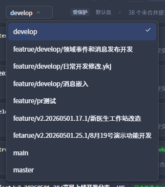
| 来源 | 含义 |
|---|---|
| 手动指定 | 你在这行选过的值（跨会话记住） |
| 项目配置 | 项目 .nezha/config.toml 里的默认分支 |
| 按分支名推断 | 从分支命名规范里的目标段推断（如 hotfix/…/master/… → master） |
| 默认值 | 都推断不出来时的兜底（develop / master / main 里最像主干的一条） |
改一行的目标分支后，Nezha 只重算这一个分支的合并状态与可删性（不会重扫整个仓库），并立刻用新值更新界面。
批量发起合并请求
勾选要发起的分支 → 点工具条右侧「发起合并请求(N)」：
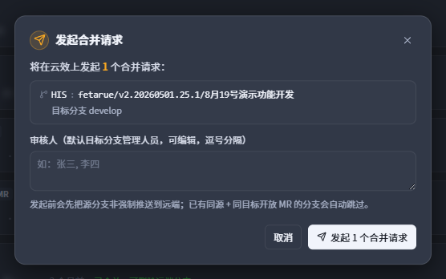
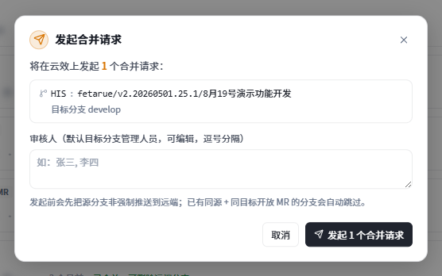
- 弹出确认层，逐条列出「分支 → 目标分支」，并可加「审核人」（默认带上目标分支保护规则里的默认评审人，可用成员选择器搜索勾选，也可手输）；
- 点「发起 N 个合并请求」——Nezha 逐条先把源分支非强制推送到远端，再调 Codeup 接口创建 MR。
已有「同源 + 同目标」开放 MR 的分支会自动跳过（幂等，不会重复发起）；单条失败不中断整批，结果在列表下方逐条回执。审核人填的名字若在组织成员里查不到（或重名），该条会明示失败原因而不发起——不会静默创建一条没有评审人的 MR。
批量删除远端分支
同一套勾选也驱动「删除远端分支(N)」。删除是两阶段：先 dry-run 扫描（只看哪些可删、哪些被跳过及原因），弹出确认框核对后再执行，逐条回执。
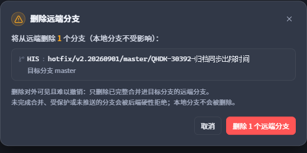
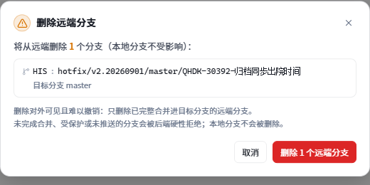
硬门禁：只有已完整合并进目标分支的远端分支才允许删除；未完成合并、受保护、未推送的一律拒绝。只删远端分支，不会删你的本地分支。
「发起合并请求(N)」与「删除远端分支(N)」的计数彼此独立：未合并的分支计入发起、已收尾的分支计入删除。同一行不会同时进两个计数。
7合并审核
欢迎页左侧「合并审核」进入合并审核中心，集中处理各仓库待处理 / 待合并的 MR —— 从拉代码、审查、合并，到把审查报告回写到云效评论。
7.1入口与列表
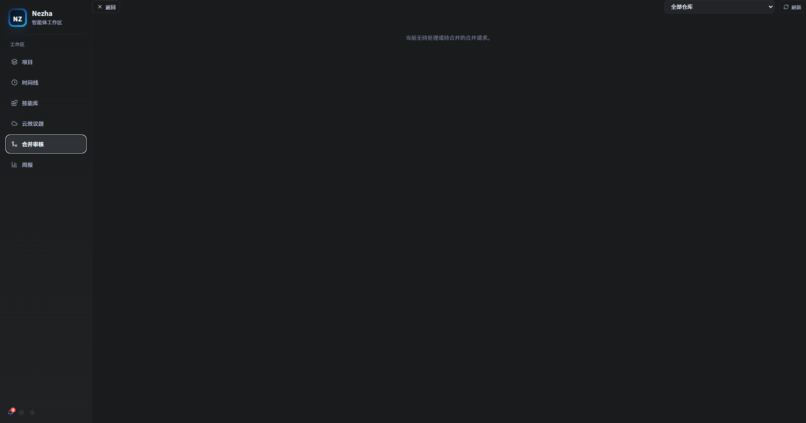
- 顶部「全部仓库」下拉筛选仓库、「刷新」重新拉取。
- 每张 MR 卡片显示：状态徽标（评审中 / 待合并 / 已合并 / 已关闭 / 已通过、有冲突）、
源分支 → 目标分支、所属仓库、作者、审核人。
7.2四个操作
| 操作 | 作用 | 前置 / 说明 |
|---|---|---|
| 拉取代码 | 把 MR 的源分支拉到本地临时仓库 | 完成后按钮变「重新拉取」；合并前必须先做这一步 |
| 代码审查 | 启动 Agent 任务，按 merge-code-review 技能出具审查报告 | 任务名形如 代码审查 <标题> |
| 分支合并 | 启动 Agent 任务，把源分支合并并推送到目标分支 | 需先拉取代码；报告含阻止级 fail 会二次确认 |
| 查看审查结果 | 打开审查报告弹窗 | 无报告时提示先执行「代码审查」 |
7.3审查报告
「查看审查结果」弹窗内可：
- 「回写到评论」：先进入可编辑态（可改 Markdown，带字数提示），确认后作为整体评论发布到云效 MR；
- 「复制」：复制全文到剪贴板；
- 「导出 .md」：导出为本地 Markdown 文件。
7.4临时仓库与认证
- 合并审核用到的临时仓库默认放在
~/.nezha/codeup_worktrees/；可在「应用设置 → Git 和源代码设置」的「临时仓库基路径」里改。 - 认证复用云效个人访问令牌，若未配置会提示先到「云效议题」里完成连接。
8常见问题
| 现象 | 处理 |
|---|---|
| 云效「获取组织」失败 / 列表为空 | 检查令牌是否有云效 Projex 读权限；确认组织在令牌可见范围内。 |
| 「只看我负责的」不可用 | 当前用户未能自动识别，到连接设置补填「我的用户 ID / 用户名」后重试。 |
| 议题行显示「已导入」，没有入口 | 该议题本地已有绑定任务（去重标记）。到对应项目「待办」列找它，或删除旧任务后重新发起。 |
| 想把一条议题直接落成待办 | 没有单独的「导入」按钮；请用「发起讨论 → 生成待办」，或直接操刀已有任务。 |
| 方案在哪看全貌 / 怎么标记完成 | Alt + K（macOS ⌘ + K）→「方案」标签页。生命周期操作（标记完成 / 重开 / 取消 / 归档 / 删除）在详情右上角，见 1.5。 |
| 任务一直停在「等待前置」 | 前置未全部 done。若前置失败/取消/中断/缺失会标红并只通知一次，可「忽略依赖，仍然开始」（不绕过并发上限）。 |
| 方案待办能不能并行跑 | 默认串行：受 [plan] max_concurrent（默认 1）约束，按 deps.json 拓扑顺序逐个放行；手动点 ▶ 同受此限。 |
| 取消方案是不是就删了 | 不是，取消是留存态；移出视野用「归档」（可反归档），真删要显式删除并二次确认。 |
| 怎么把新议题挂到已有方案下 | 「发起讨论」对话框里选「关联方案（作为子方案追加）」→ 挑一个已定稿主方案。 |
| 「批量盘问」开了没反应 | 需先在技能库安装 batch-grill-me 技能；该开关只改提示词风格，Bug 议题仍一次一问。 |
| 发起讨论后 Agent 读不到议题图片 | 图片在发起时下载；若任务重跑/恢复，图片可能已随任务清理，可重新发起或用附件补图。 |
提交信息不含 #编号 | git_commit 会自动追加；merge_task_worktree 会校验并阻断缺失提交。 |
| 「回写云效」后没有出现在议题 | 确认云效工作项「评论」权限；如价值评分字段写入失败，用「补写字段」。 |
| 「沉淀知识」无候选 | 说明本次讨论没有图谱之外的、有依据的增量；可「重新生成」或换更聚焦的知识技能后再试。 |
| 知识沉淀后没人去改图谱 | 在「应用设置 → 技能库」开启「知识沉淀自动回写」，确认过的知识会经质量门自动写入绑定图谱。 |
| 技能库显示「同步失败，使用缓存技能」 | 网络/凭据问题。检查 URL/分支、网络，点「立即同步」重试。 |
已安装技能健康标记 broken/diverged | Hub 里技能被改名/删除，或路径被外部修改；手动卸载或清理失效安装。 |
| 构建面板显示「未发现 git 仓库」 | 点面板「刷新」重新探测；确认项目根确是 git 仓库。 |
| 构建报「找不到 hsp-build-order.ps1」 | 到「构建配置」填写 script_path，或确认技能仓库已配置且装了 hsp-build-order 技能。 |
| 增量构建报「未检测到变更」/「请先建立基线」 | 先跑一次「全量构建」或点「刷新基线」建立基线；随后再增量。 |
| 「扫描项目」按钮灰着 | 图谱未就绪或缺对应适配器脚本；确认图谱「已就绪」，并保证 adapters/<adapter>.py 存在。 |
| 「知识库」提示「技能库未配置」 | 先到「应用设置 → 技能库」配置技能仓库来源。 |
| 「分支合并」点不动 | 需先对该 MR「拉取代码」。 |
| 创建计划报分支重名 | 用「检测」后选「继续使用远端分支」或「改名」。 |
| 创建计划报「主工作区存在未提交改动」 | 未勾选「另建 worktree」时计划分支直接切在主工作区，需先提交或暂存当前改动；或改为勾选「另建 worktree」用独立代码目录。 |
| 创建计划的「版本」下拉是灰的 | 未配云效令牌 / 组织 / 项目，取不到版本列表；直接在版本输入框手输（如 v2.20260901），不影响创建。 |
| 「发起合并」视图一开始是空的 | 分段加载：先选工具条「仓库」下拉里的某个仓库，才会扫码分支（一次全扫要几十秒，所以不自动全扫）。 |
| 「发起合并」里看不到我要的分支 | 列表只收「已推送 + 有未合并提交 + 无开放 MR」的分支；关掉「我的提交」开关看同事的分支，或确认该分支已 push 到远端。 |
| 「发起合并请求」按钮点不动 | 勾选的分支里没有符合条件的（未推送 / 已合并 / 已有开放 MR 都会被排除）；勾一条还没发起 MR 的分支再试。 |
| 发起合并报「已有开放合并请求 #N，跳过」 | 该源分支 + 目标分支组合在云效上已有开放 MR，Nezha 不重复发起（幂等）；去「合并审核」处理那条即可。 |
| 「删除远端分支」点不动 | 勾选的分支都不满足删除门禁：只有已完整合并进目标分支的才可删，未合并 / 受保护 / 未推送会被拒。 |
| 改完目标分支后行的状态没变 | 改目标分支会让后端只重算该分支；等这次重算回来（工具条会转圈）就地更新。若目标分支在远端不存在，该行会标「数据缺失」或从候选列表消失。 |
| 审查报告「回写到评论」失败 | 确认云效令牌有合并请求评论权限；报告本身可先「复制」或「导出 .md」保底。 |
| 合并审核列表一直为空 | 当前筛选仓库下确实没有待处理 / 待合并的 MR；换「全部仓库」或点「刷新」。 |